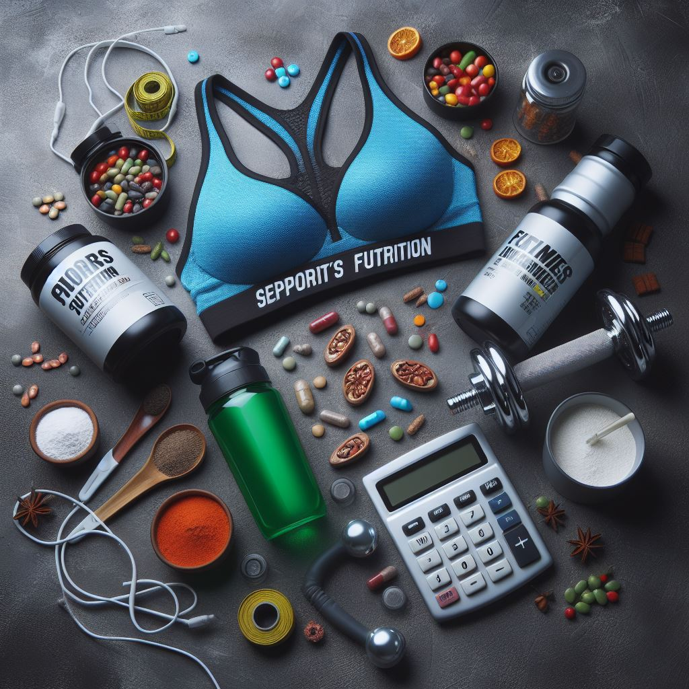

Жиросжигатели
Жиросжигатели — это пищевые добавки, которым приписывают способность ускорять метаболизм жиров в организме и увеличивать высвобождение энергии. Другими словами, они делают так, чтобы человек тратил больше калорий, не прилагая усилий. Обычно жиросжигатели состоят из множества ингредиентов, каждый из которых действует по-своему. Вот некоторые из эффектов, которые они оказывают:
1) Увеличение энергозатрат:
- Некоторые вещества, такие как кофеин, синефрин и экстракт зелёного чая, стимулируют организм тратить больше калорий на производство тепла. Это способствует уменьшению жировых запасов.
2) Стимуляция расщепления жиров:
- Конъюгированная линолевая кислота, ирвингия габонская, L-карнитин и другие добавки помогают разлагать жиры и подавлять их синтез.
3) Уменьшение усвоения жиров и углеводов:
- Хитозан, экстракт белой фасоли, экстракт зелёного кофе, бета-глюканы и глюкоманнан мешают усвоению жиров или углеводов, что снижает общую калорийность рациона.
4) Подавление аппетита:
- Многие вещества, включая кофеин, экстракт зелёного чая и гарцинию камбоджийскую, помогают снижать аппетит.
- Для этой цели также добавляют пиколинат хрома и экстракт караллума фимбриата.
Важно! Если вы планируете включить жиросжигатели в свой рацион, обязательно проконсультируйтесь с врачом и тренером, чтобы выбрать подходящий продукт и дозировку. Помните, что индивидуальные потребности могут различаться, и важно следовать рекомендациям специалистов.
Теперь вы знаете больше о жиросжигателях! Если вас заинтересовал данный продукт, переходите по кнопке "Просмотр продукции" и подбирайте товар для себя!